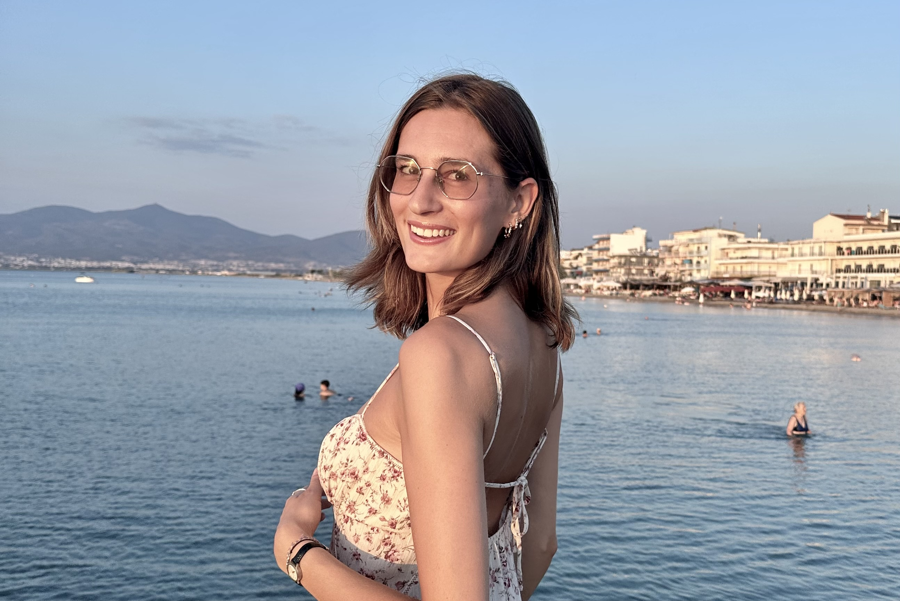
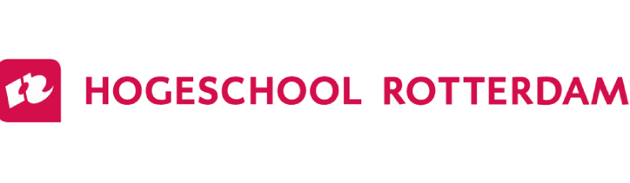
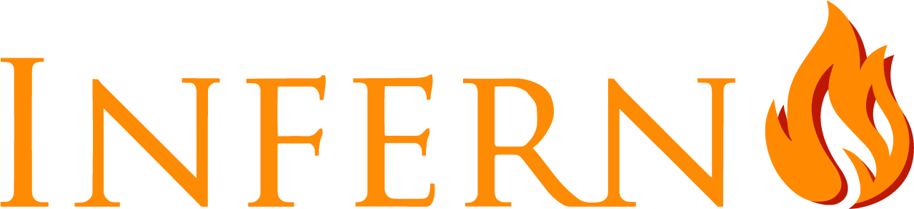

Hey, jij ook hier?
Mijn naam is Lotte Sies en ik ben een 25-jarige studente aan de Hogeschool Rotterdam. Hier studeer ik Communication & Multimedia Design. Over Rotterdam gesproken: hier kom ik ook vandaan! Op deze website zal ik jullie wat meer over mezelf vertellen en laten zien wat ik heb gemaakt. In mijn vrije tijd ben ik veel met vriendinnen, houd ik ervan om creatief bezig te zijn en staat er altijd muziek aan! Maar eerst ga ik een stukje vertellen over hoe ik bij de studie CMD ben beland.

Mijn achtergrond
Ik ben geboren en getogen in Rotterdam, waar ik ook op school heb gezeten. Nadat ik mijn havodiploma behaalde, verhuisde ik naar Maastricht om CMD aan Hogeschool ZUYD te studeren. Maastricht was superleuk en ik vond de studie geweldig, maar ik merkte dat deze toch niet helemaal bij mij paste. Daarom verhuisde ik terug naar Rotterdam.
Terug in Rotterdam ging ik opnieuw naar studies kijken. Ik wilde graag iets doen wat technischer was. Hierdoor kwam ik uit bij Creative Media & Game Technologies. Aan deze studie heb ik twee jaar gestudeerd, maar in het tweede jaar begon de studie erg technisch te worden en bleef er weinig over van de creativiteit die ik had verwacht. Daarom stopte ik ook met deze studie. Drie keer is scheepsrecht, dacht ik, en ik begon opnieuw aan de studie CMD, dit keer in Rotterdam! Ik vind dat deze studie veel beter bij mij past en dat ik eindelijk de goede keuze heb gemaakt. Op de hogeschool kan ik al mijn creativiteit kwijt en soms zijn er zelfs technische aspecten die ik nog steeds interessant vind! Zoals het maken en programmeren van mijn eigen portfolio website.

Wie ben ik?
Naast mijn studie doe ik veel andere dingen, zowel op sociaal als sportief vlak. Ik geniet van mijn studententijd in Rotterdam! Ik woon inmiddels drie jaar op kamers in Rotterdam-West. Als je het mij vraagt, is dit de leukste wijk van Rotterdam. Ik woon vlakbij de Nieuwe Binnenweg, waar al mijn favoriete cafés en clubs zich bevinden. In mijn vrije tijd ben ik vaak bij mijn vrienden te vinden. Ook zul je merken dat er om mij heen altijd muziek klinkt. Ik verdiep mij hier graag in en weet veel feitjes over muziek. Meer hierover is te vinden op de muziekpagina!! Verder houd ik mij graag bezig met creatieve dingen, zoals lezen, schrijven en knutselen. Sporten is niet mijn grootste hobby, maar van wintersport kan ik zeker genieten. Op ski's of een snowboard ga ik er altijd voor! Zwemmen en hardlopen vind ik ook leuk, maar wel alleen met lekker weer!! Naast deze hobby's ben ik ook veel bezig met mijn dispuut. Hieronder vertel ik daar meer over!

Inferno
Toen ik begon met studeren in Rotterdam, ben ik ook lid geworden van een studentenvereniging. De vereniging heet het Rotterdamsch Studenten Gezelschap (RSG). De vereniging bestaat sinds 1921 en de sociëteit, genaamd Asker V, ligt aan het Haringvliet met een prachtig uitzicht op de Willemsbrug. Inmiddels ben ik hier al een aantal jaar lid en ook al een paar jaar lid van het mooiste dispuut van de vereniging: Inferno. Dit dispuut betekent veel voor mij en hier heb ik vrienden gemaakt die ik de rest van mijn leven zal hebben. Ik heb ook twee bestuursjaren gedaan binnen dit dispuut, namelijk als Quaestor (penningmeester) en Praeses (voorzitter). Tijdens deze twee jaar heb ik veel geleerd over geldzaken, maar ook over hoe je met een grote groep mensen omgaat en hier op een prettige manier leiding aan kunt geven.
